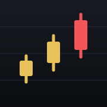
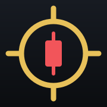
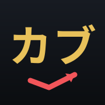
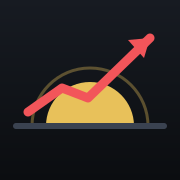

ホーム画面アイコン 4案
iOSの角丸マスク適用イメージ。大＝ホーム画面サイズ、小＝設定画面などの縮小サイズ。
案1 ローソク足
上昇する3本のローソク足。株ツールと一目でわかる王道。最後の1本だけ赤（上昇）。

HOME
SMALL
案2 スコープ
「スカウト＝偵察」の照準サークルの中に上昇ローソク。カブスカウトの名前と意味がつながる。

HOME
SMALL
案3 タイポ「カブ」
琥珀の太字「カブ」＋赤の上昇アロー。文字なので何のアプリか迷わない。

HOME
SMALL
案4 寄り付きの朝日
地平線から昇る朝日（＝寄り付き）と上昇スパークライン。「朝使う道具」の物語性。

HOME
SMALL